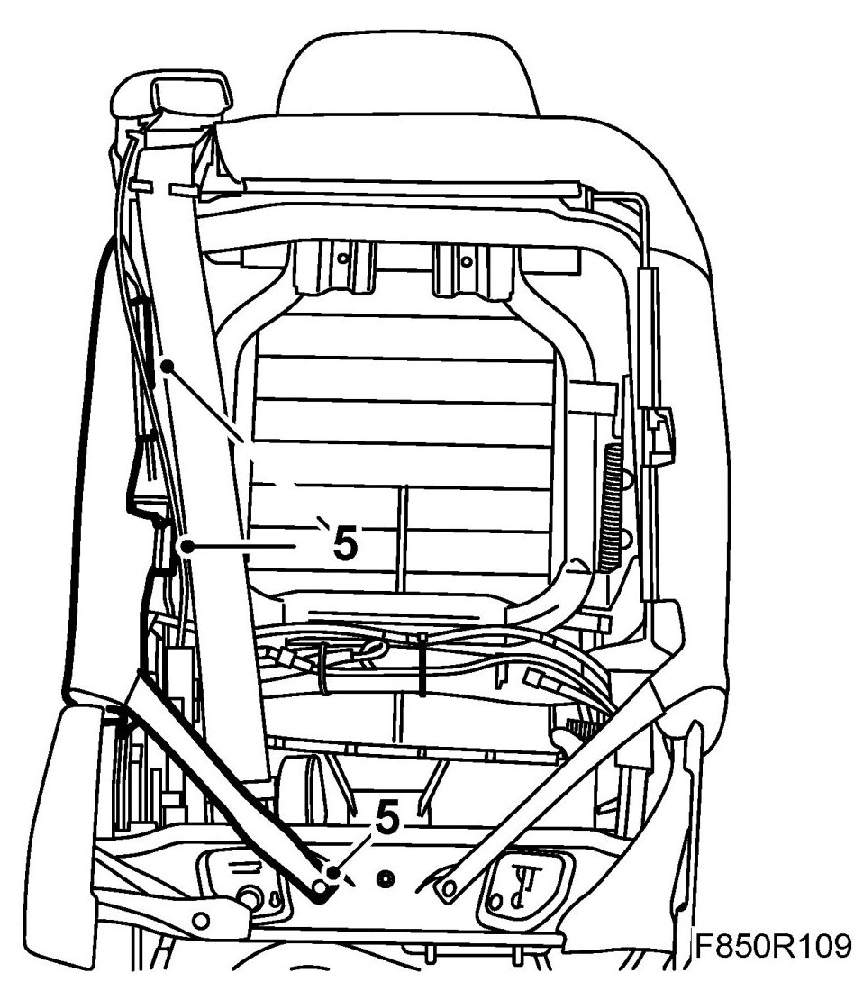
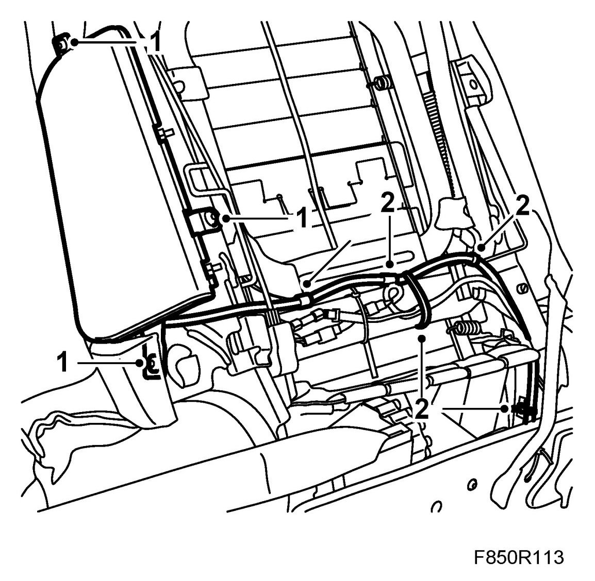
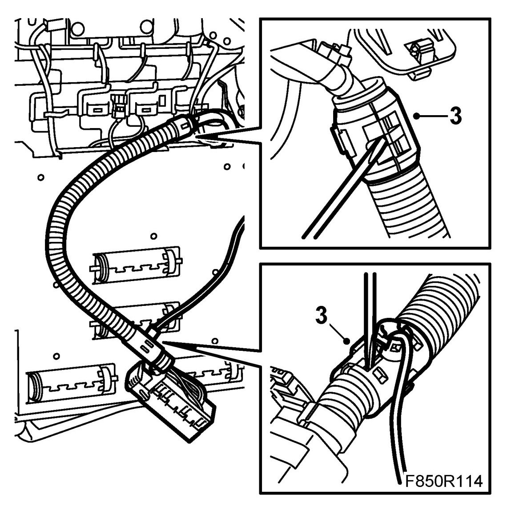
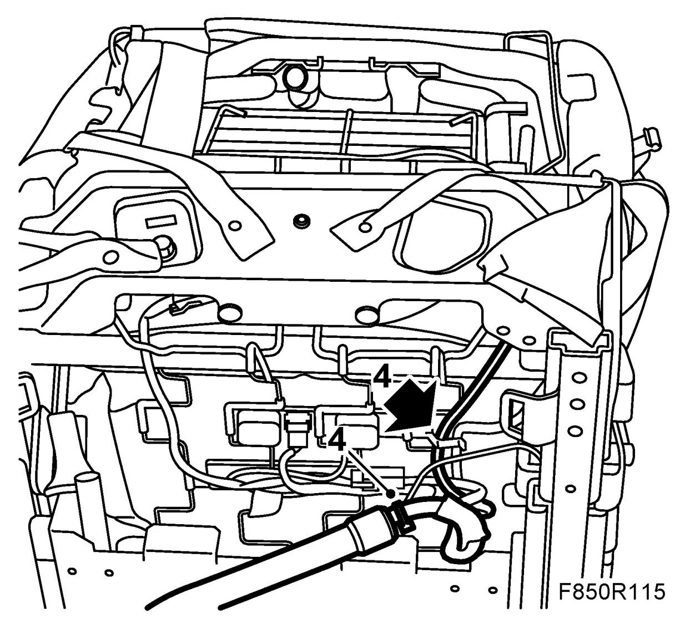
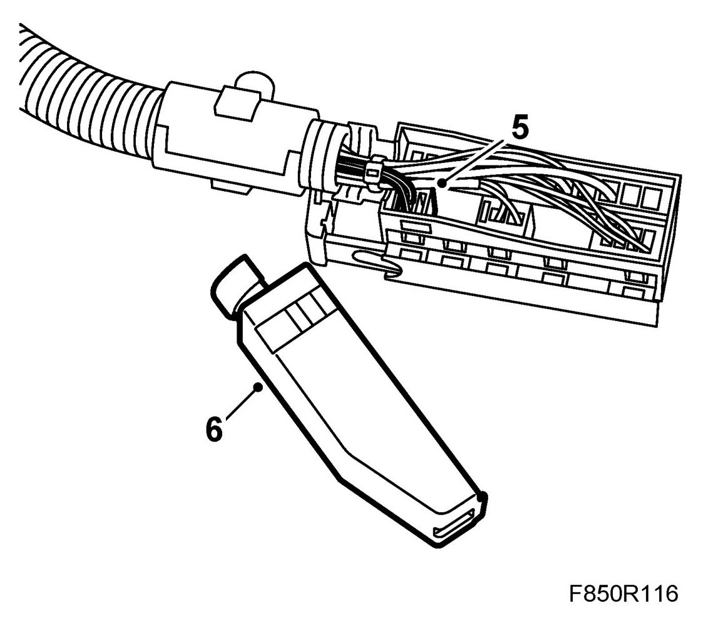
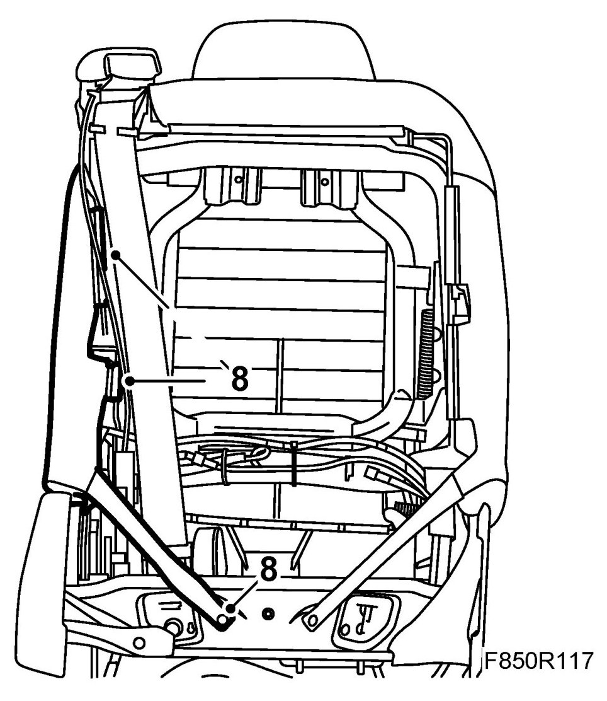

Airbag, Side (333Db, 333Pb), CV
Airbag, Side (333Db, 333Pb), CV
WARNING: Read through Safety and handling instructions and Before removing a control module before starting work.
To remove
WARNING: The battery's ground cable must be removed before the positive cable. Wait for at least 1 minute after disconnecting the battery before beginning any work on the airbag system. Otherwise the airbag may be deployed unintentionally and this can cause fatal/severe personal injuries.
1. Set the seat to the front highest position.
2. Turn the ignition key to the position LOCK.
3. Remove front seat backrest cover, CV.
4. Remove the front seat rear lower cover.
5. Release the backrest upholstery hooks from the frame.
Fold the upholstery forward.

6. Remove the connector from the seat.
7. Open the connector.
8. Remove the airbag connector from the large connector.
9. Remove the wiring harness from the lower part of the seat frame.
10. Open the flexi hose and remove the airbag wiring harness.
11. Remove the airbag wiring harness from the seat back frame.
12. Remove the airbag from the back frame.
To fit
WARNING: Torn backrest upholstery must not be repaired and refitted. The resistance of the upholstery is very carefully calculated as regards the side airbag and must not be changed.
1. Fit the airbag to the back frame.
Tightening torque 8 Nm (6 lbf ft)

2. Fit the airbag wiring harness to the seat back frame.
3. Lay the airbag wiring harness in the flexi hose.

4. Fit the wiring harness to the lower part of the seat frame.

5. Fit the airbag connector in the large connector.

6. Close the connector.
7. Fit the connector to the seat.
8. Fit the backrest upholstery.

9. Fit the rear cover on the seat.
10. Fit the backrest cover.
11. Return the seat to the correct version.
12. Connect the battery.
13. Turn ON the ignition and check the airbag system and control module using the diagnostic tool as follows:
Connect the diagnostics instrument to the diagnostics socket under the dashboard. Delete any trouble codes.
Switch off the ignition and then on again. Wait at least 1 minute with the ignition switched on.
Check whether a diagnostic trouble code is displayed:
If a diagnostic trouble code is displayed:
Carry out fault diagnosis according to the instructions under respective trouble codes.
If no diagnostic trouble code is displayed:
Fitting completed correctly. Disconnect the diagnostics instrument.
14. Carry out Measures after disconnecting the battery.